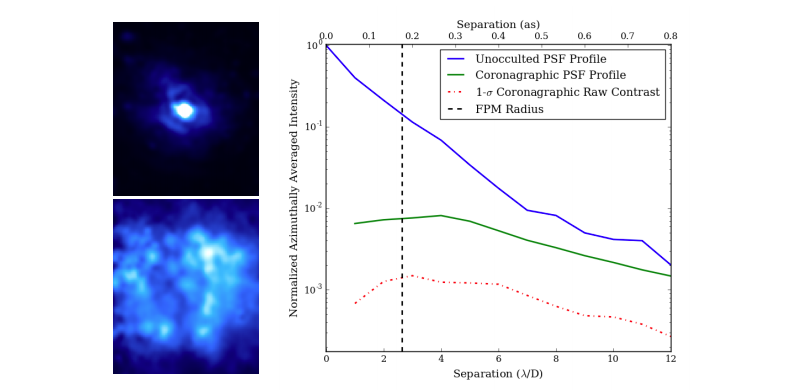
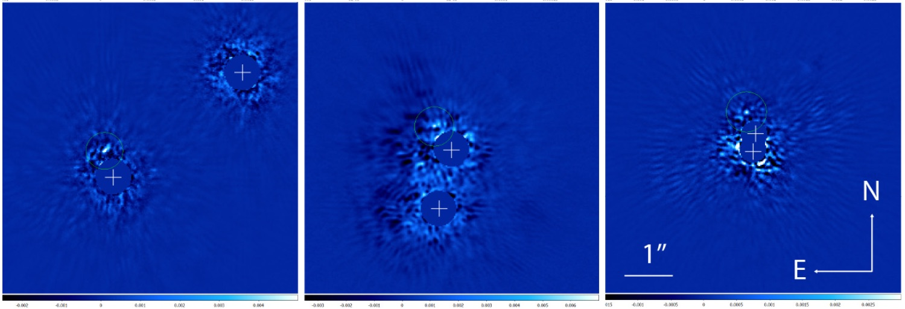
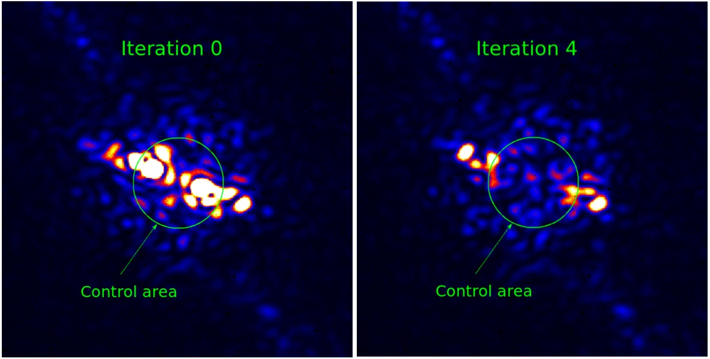

Stellar Double Coronagraph
High-contrast imaging with the Stellar Double Coronagraph
SDC's flexibility and versatility make it a unique platform for high contrast imaging research. Below I describe active research programs using the instrument, including novel detectors, optical technologies, and observing programs.
If you are interested in using SDC, please contact me here.
DARKNESS
Microwave kinetic inductance detectors (MKIDs) are superconducting arrays that have advantages over conventional silicon detectors, including intrinsic energy resolution (meaning each pixel can tell the energy, or equivalently "color", of a photon) without the need for extra dispersing optics, no read noise, no dark current, and microsecond timing accuracy. These properties are well suited to the field of high contrast imaging, where very low noise detectors are needed to detect faint planets, energy resolution is needed to disambiguate planets from stellar noise (and measure planet spectra!), and photon timing data can be used to disambiguate planetary photons and speckle photons. No other detectors currently possess all these properties, but until recently, the advantages had never been demonstrated for exoplanet imaging.

The star pi Herculis taken with the DARKNESS camera, unocculted (top left) showing the diffraction limited point-spread function, and with SDC providing coronagraphic suppression (bottom left). For this application, we replaced the vortex coronagraphs with simple Lyot coronagraphs for better tolerance of tip/tilt residuals. Figure 14 from Meeker et al. 2018
Ben Mazin's group at UCSB developed the first MKID-based high contrast imaging camera, DARKNESS (Dark-speckle Near-IR Energy-resolved Superconducting Spectrophotometer). DARKNESS was installed behind SDC in July 2016, with science operations beginning shortly after. DARKNESS has provided the first on-sky demonstration of MKIDs for high contrast imaging. It is the first diffraction limited MKID instrument, and the first combination of MKIDs with a coronagraph. A particularly interesting result to come out of the on-sky data was the first demonstration of photon-timing discrimination between stellar speckle and true companions (see Figure 15 in the above link).
Binary star high contrast imaging
While a large fraction of stars are in binary systems, binary stars are typically excluded from high contrast imaging surveys, as the light from the star not suppressed by the coronagraph will overwhelm any faint planets orbiting either star. As such, very little is known about planet formation in binary systems.

A subset of targets from Kuhn et al. (2018), showing the simultaneous nulling of close binary systems. This data was taken at Palomar Observatory in late 2017.
SDC has two focal plane coronagraphs that are independently controllable, allowing for simultaneous suppression of the full 360 degree fields surrounding both stars. Jonas Kuhn (ETH Zurich), Ji Wang (OSU), and Farisa Morales (JPL) are leading a pilot survey for planets around binary systems using SDC. This opens up an unique parameter space for exploration, potentially for detections of substellar objects in close orbits around binary systems.
Self-coherent camera
Self-coherent cameras (SCCs) are optical devices that create fringes over the scattered starlight in the focal plane. Through analysis of these fringes, both the phase and amplitude of the electric field of the starlight can be measured. This information can be used both to correct speckles and to detect incoherent light from planets. SCCs are considered a leading wavefront correction technology for the next generation of ground and space-based telescopes.

Demonstration of the self-coherent camera performance on SDC. The systematic errors from starlight (or, in this case, a simulated star) are quickly suppressed by the control loop. Image from Galicher et al. (2017)
Raphael Galicher (Paris Obs.), Pierre Baudoz (Paris Obs.) and Jacques-Robert Delorme (CIT) installed a self-coherent camera on SDC and used it to demonstrate the ability to efficiently suppress speckle aberrations in the instrument. This was the first installation of an SCC in a telescope environment. Unfortunately, the weather did not cooperate and on-sky results lie in the future.